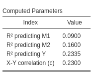

Mediation: Complex models
0.4.0
Here we compare the results of PAMLj
with other software that performs power analysis for mediation in
complex models. We consider three complex models: two parallel
mediators, three parallel mediators, and two sequential mediators. At
the moment, the only package that explicitly deals with these models is
the Monte Carlo
Power Analysis Shiny app, which provides power estimates based
solely on simulations. However, with a bit of work, one can also employ
the pwrss R
package to test parameters for these models. The advantage of
pwrss is that it provides estimates based on the Sobel
test, joint significance, and Monte Carlo methods, allowing for better
comparisons of the results.
pwrss R package provides desired power and required sample size based on Sobel test and joint significance methods. It also provides desired power based on simulations. The simulations are based on Monte Carlo parametric re-sampling.
Monte Carlo Power Analysis shiny app provides desired power based on simulations. The simulations are based on Monte Carlo semi-parametric re-sampling.
We test the software finding power, because the two packages readily estimate the parameter.
Two parallel mediators
Setup
- Aim = Power
- Expected \(a1\) = .3
- Expected \(b1\) = .3
- Expected \(a2\) = .4
- Expected \(b2\) = .2
- Expected \(r12\) = .25 expected correlations among mediators
- Expected \(c'\) = .15
- N = 100
- Alpha = .05
For Joint significance method:
For Sobel test method:
For Monte Carlo method:
As expected, joint significance and
Monte Carlo methods agree in the estimated parameters,
whereas Sobel test reports a lower power for both mediated
effects as compared with the other methods estimation.
Monte Carlo shiny app
By setting up the same parameters in the
Monte Carlo Shiny app, we obtain very similar results,
although the app seems to produce smaller power values than PAMLj. The reason for this small but
consistent discrepancy is the way different software computes the
expected standard errors of the coefficients. Both PAMLj and pwrss simulate a z-test
when computing standard errors and the distribution of the parameters.
The Monte Carlo Shiny app, however, assumes normality of
the parameters but computes the standard errors based on the t-test. For
small samples, this difference may yield slightly different final
parameters.
pwrss
To obtain results for the two parallel mediators model using
pwrss, we need some preliminary computations. The
pwrss.z.mediation function allows you to input, for each
mediated effect, the expected R-squared in predicting the mediator
(option r2m.x in the function) and the R-squared in
predicting the dependent variable (option r2y.mx in the
function). This is because the standard error of the coefficients
depends on the R-squared values, and so does the standard error of the
mediated effect. In other words, the presence of other mediators is
taken into account in the computation by including their effects in the
R-squared predicting the dependent variable. When the R-squared values
are correctly specified, the pwrss.z.mediation function can be used to
estimate power (or N) for complex models as well.
Let’s start with the first mediated effect \(ME=a_1 \cdot b_1\). The computation is easy: \(R_{m.x}^2=a_1^2\), because \(a_1\) is basically a Pearson correlation. For \(R_{y.mx}^2\) (predicting Y), the computation is more complex. We can take the R-squared from PAMLj results.

The R-squared is \(R_{y.mx}^2=.2335\). Plugging the parameters in we obtain the results, again in lines with the PAMLj results.
a1 <- .3
b1 <- .3
a2 <- .4
b2 <- .2
r1 <- .25
cp <- .15
r2y.mx<-.2335
pwrssp<-pwrss::pwrss.z.mediation(a=a1,b=b1,r2y.mx=r2y.mx,n=100,alpha=.05)## Indirect Effect in Mediation Model
## H0: a * b = 0
## HA: a * b != 0
## ---------------------------
## test power n ncp
## Sobel 0.620 100 2.266
## Aroian 0.600 100 2.213
## Goodman 0.642 100 2.323
## Joint 0.798 100 NA
## Monte Carlo 0.784 100 NA
## ----------------------------
## Type I error rate = 0.05For the second mediated effect, we have
a1 <- .3
b1 <- .3
a2 <- .4
b2 <- .2
r1 <- .25
cp <- .15
r2y.mx<-.2335
pwrssp<-pwrss::pwrss.z.mediation(a=a2,b=b2,r2y.mx=r2y.mx,n=100,alpha=.05)## Indirect Effect in Mediation Model
## H0: a * b = 0
## HA: a * b != 0
## ---------------------------
## test power n ncp
## Sobel 0.471 100 1.888
## Aroian 0.456 100 1.849
## Goodman 0.488 100 1.929
## Joint 0.549 100 NA
## Monte Carlo 0.529 100 NA
## ----------------------------
## Type I error rate = 0.05Nicely in line with PAMLj results.
Admittedly, taking the R-squared from PAMLj and plug it into another software to check the results of PAMLj it is not much of a test. So let’s check the R-squared.
In multiple regression, the \(R^2\) can be computed as: \[ R^2=\sum{\beta_i \cdot r_{yi}} \] Now, we have the betas, we need the correlations. For the mediators let’s indicate as \(1\) and \(2\) the two mediators.
For mediator \(M1\) we have that
\[ r_{YM1}=b_1+b_2 \cdot r_{12} + c' \cdot a_1 \]
For mediator \(M2\) we have that
\[ r_{YM2}=b_2+b_1 \cdot r_{12} + c' \cdot a_2 \]
For mediator \(X\) we have that
\[ r_{YX}=c'+a_1 \cdot b_1 + a_2 \cdot b_2 \] Substituting the correlations into the \(R^2\) formula, we obtain
\[ R^2 = b_1^2 + b_2^2 + c^2 + 2 \cdot b_1 \cdot b_2 \cdot r_{12} + 2 \cdot a_1 \cdot b_1 \cdot c + 2 \cdot a_2 \cdot b_2 \cdot c \]
Numerically:
a1 <- .3
b1 <- .3
a2 <- .4
b2 <- .2
r12 <- .25
cp <- .15
rym1<-b1+b2*r12+cp*a1
rym2<-b2+b1*r12+cp*a2
ryx<- cp +a1*b1+a2*b2
b1^2+b2^2+cp^2+ 2*b1*b2*r12+ 2 * a1*b1*cp+2*a2*b2*cp## [1] 0.2335So, it’s fine.
Three parallel mediators
We now add another mediator
Setup
- Aim = Power
- Expected \(a1\) = .3
- Expected \(b1\) = .3
- Expected \(a2\) = .4
- Expected \(b2\) = .2
- Expected \(a3\) = .25
- Expected \(b3\) = .15
- Expected \(r12\) = .25
- Expected \(r13\) = .1
- Expected \(r23\) = .4
- Expected \(c'\) = .15
- N = 100
- Alpha = .05
PAMLj
For Joint significance method:
For Sobel test method:
For Monte Carlo method:
pwrss
To utilize pwrss we need to input, for each mediated
effect, the \(R^2\) predicting both the
dependent variable and the mediators. We can take these estimates from
PAMLj.
a1 <- .3
b1 <- .3
a2 <- .4
b2 <- .2
a3 <- .25
b3 <- .15
cp <- .15
r2y.mx<-.3003
rmx<-a1^2
pwrssp<-pwrss::pwrss.z.mediation(a=a1,b=b1,r2y.mx=r2y.mx, r2m.x=rmx ,n=100,alpha=.05)## Indirect Effect in Mediation Model
## H0: a * b = 0
## HA: a * b != 0
## ---------------------------
## test power n ncp
## Sobel 0.639 100 2.315
## Aroian 0.619 100 2.263
## Goodman 0.659 100 2.371
## Joint 0.818 100 NA
## Monte Carlo 0.819 100 NA
## ----------------------------
## Type I error rate = 0.05## Indirect Effect in Mediation Model
## H0: a * b = 0
## HA: a * b != 0
## ---------------------------
## test power n ncp
## Sobel 0.499 100 1.958
## Aroian 0.484 100 1.919
## Goodman 0.516 100 2.001
## Joint 0.587 100 NA
## Monte Carlo 0.590 100 NA
## ----------------------------
## Type I error rate = 0.05## Indirect Effect in Mediation Model
## H0: a * b = 0
## HA: a * b != 0
## ---------------------------
## test power n ncp
## Sobel 0.302 100 1.441
## Aroian 0.279 100 1.372
## Goodman 0.331 100 1.522
## Joint 0.302 100 NA
## Monte Carlo 0.295 100 NA
## ----------------------------
## Type I error rate = 0.05Monte Carlo shiny app
Unfortunately, to obtain the correct power parameters in the app, we need to input the correlation matrix. Obtaining the correlation matrix starting from the betas coefficients is tedious, so I just list it here.
sigma<-matrix(c(1.0000, 0.30, 0.400, 0.2500, 0.3575
, 0.3000, 1.00, 0.250, 0.1000, 0.4100
, 0.4000, 0.25, 1.000, 0.4000, 0.3950
, 0.2500, 0.10, 0.400, 1.0000, 0.2975
, 0.3575, 0.41, 0.395, 0.2975, 1.0000),ncol=5,nrow=5)
sigma## [,1] [,2] [,3] [,4] [,5]
## [1,] 1.0000 0.30 0.400 0.2500 0.3575
## [2,] 0.3000 1.00 0.250 0.1000 0.4100
## [3,] 0.4000 0.25 1.000 0.4000 0.3950
## [4,] 0.2500 0.10 0.400 1.0000 0.2975
## [5,] 0.3575 0.41 0.395 0.2975 1.0000To be sure that they are the correct correlations, just check if they produced the intended beta coefficients.
data<-as.data.frame(MASS::mvrnorm(100,c(0,0,0,0,0),sigma, empirical=T))
names(data)<-c("x","m1","m2","m3","y")
zapsmall(coef(lm(y~m1+m2+m3+x,data=data)))## (Intercept) m1 m2 m3 x
## 0.00 0.30 0.20 0.15 0.15as expected, they are correct.
At this point, we can insert the correlation in the app.

As expected, the power obtained is slightly lower than the one
obtained with pwrss and PAMLj, but it is substantially in line.
Comments?
Got comments, issues or spotted a bug? Please open an issue on PAMLj at github or send me an email